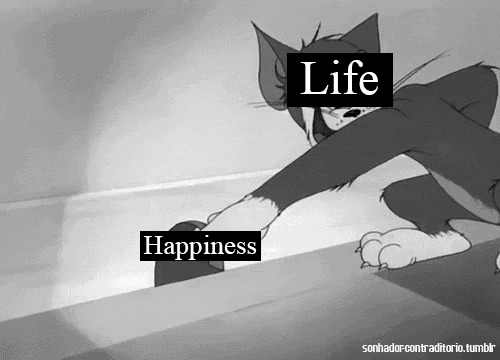

<html>
  <head>
  <title>The Quotes</title>
</head>
 <body>

 <audio src="sadsong.mp3" controls></audio>

 </body>
</html>

<body background="raingif.gif" vlink="#FFFFFF">

<font size"50">
<font color="#FFFFFF">
<font face="Lato">

  </head>

<center>


<p>

<table border="5">
<tr>
<td><a href="homepage.html"</a>Home</td>
<td><a href="aboutme.html"</a>About Me</td>
<td><a href="thevision.html"</a>The Vision</td>
<td><a href="thequotes.html"</a>The Quotes</td>
<td><a href="contactme.html"</a>Contact Me</td>
</tr>
</table>

</p>

<p>
       <body>

<b>

<h1>My Qoutes</h1>


<p>
Be genuine, don't steal anything from anybody else, and under no circumstances should you ever consent to them taking you alive.
</p>


<p>

</p>

<p>
I am not sure how other people view me, but to me it seems as if I have simply been like a child who plays on the beach.
</p>

<p>
Its either we be a good character or a bad character is up to ourselves.
</p>

<p>
I would distract myself by trying to locate a smoother pebble or a nicer shell than the average, 
</p>

<p>
all the while the vast ocean of truth sat before me, untouched.
</p>

<p>

</p>

<p>
I need to celebrate life because I'm in a good place, I work hard, and I'm happy with who I am and happy with what I do for a living.
</p>

<p>
However, there are times when I just focus too much on getting better at fighting and improving myself,
</p>

<p>
to the point where I overwhelm myself, 
</p>

<p>
and those are the times when I need to take a step back, slow down, and enjoy life as well as my training.
</p>


</b>
      </body>
</p>


</center>
</html>


